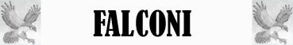
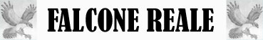

Attacco Veloce Inferiore;
Picchiata;
Volo Evasivo Superiore;

|
|
Ambiente/Habitat | Montagne, Colline |
| Frequenza | Rara | |
| Organizzazione | Solitary | |
| Periodo di Attività | Giorno | |
| Dieta | Carnivora | |
| Intelligenza | Animal (1) | |
| Punti Combattimento | Nessuno | |
| Tesoro | Nessuno | |
| Allineamento Dominante | Neutrale | |
| Numero di Apparizione | 1 | |
| Classe Armatura | 5 [10 base, 1 corazza, 4 destrezza] | |
| Movimento | 4 esagoni, 16 esagoni volando | |
| Dadi Vita | 1 (+1 punti ferita) | |
| Thac0 | 19 | |
| Numero di Attacchi | Artiglio/Artiglio/Becco | |
| Danni | 1/1/1d2 | |
| Poteri Offensivi | Istinto Predatorio; Attacco Veloce Inferiore; Picchiata; |
|
| Poteri Difensivi | Robustezza Superiore (+1 punto ferita); Volo Evasivo Superiore; |
|
| Poteri Generici | Nessuna | |
| Vulnerabilità | Nessuna | |
| Resistenza alla Magia | Nessuna | |
| Sensi | Vista Acuta | |
| Dimensioni | Medium (1,25 m. di apertura alare) | |
| Morale | Steady (11) | |
| Valore in Punti Esperienza | 116 |
|
TIRI SALVEZZA DELLA CREATURA |
|||||||
| CORAGGIO | ENERGIA VITALE | MAGIA | MALATTIA | MENTE | RIFLESSI | ROBUSTEZZA | VELENO |
| 0 | 0 | 0 | 0 | 0 | +10% | 0 | 0 |
| 52 | 58 | 65 | 51 | 63 | 47 | 56 | 53 |
Descrizione
Il falco pellegrino è senza dubbio il falconide più elegante e veloce; può raggiungere i 125 cm di apertura alare ed un peso medio di 800 g.
Combat
Caccia quasi esclusivamente in volo, piombando sulla preda ad altissima velocità. Quando avvistata una preda (anche a più di 1 Km di distanza), si getta in picchiata ad ali chiuse a velocità che possono superare i 200 Km/h, cogliendola di sorpresa (-3 alla sorpresa dei nemici). La caccia è eseguita sia in volo esplorativo che in agguato: nel primo caso il falco plana molto in alto osservando i movimenti degli uccelli sottostanti e nel secondo caso si apposta in una posizione dominante (ad esempio un picco roccioso).
ISTINTO PREDATORIO (Moderate Special Ability): La creatura possiede un forte istinto predatorio, per tale motivo costei riceve un bonus costante di +1 ai suoi tiri per colpire.
ATTACCO VELOCE INFERIORE (Least Special Ability): Questa creatura è in grado di effettuare i propri attacchi più velocemente del normale. Costei quindi riceve un bonus all'iniziativa dei propri attacchi pari a - 1, fermo restando il limite minimo di +1 al fattore iniziativa del proprio attacco. Inoltre, qualora i tiri di iniziativa sugli attacchi effettuati dalla creatura abbiano un risultato superiore, questi saranno considerati pari a 9.
PICCHIATA (Lesser Special Ability): La creatura è in grado di buttarsi in picchiata contro i suoi avversari, questa manovra può essere effettuata solo qualora la creatura volando si cala sulla vittima da una distanza minima di 9 metri di altezza. Quando la creatura attacca effettuando questa manovra la stessa riceve un bonus di +2 al tiro per colpire (comprensivo del beneficio dovuto alla posizione superiore) ed alle ferite (che si considera a tutti gli effetti come un bonus dovuto alla forza della creatura). Quando effettua questa manovra, però, la creatura può attaccare unicamente con i propri artigli.
ROBUSTEZZA SUPERIORE (Typical Ability): Il fisico della creatura è estremamente robusto. Ciò conferisce alla stessa una robustezza superiore che gli garantisce 1 punto ferita supplementare.
VOLO EVASIVO SUPERIORE (Lesser Special Ability): Le ottime capacità di manovra in volo di questa creatura unita al suo modo di volare irregolare caratterizzato da continue manovre e virate improvvise impone a tutti gli avversari desiderino colpirla con attacchi a distanza (armi da tiro, da lancio od effetti equivalenti) un malus di -2 al proprio tiro per colpire.
LESSER COMBO - ISTINTO PREDATORIO e PICCHIATA - Le due abilità costituiscono una combo in quanto entrambe incidono con un beneficio cumulabile sul tiro per colpire. In considerazione che, in ogni caso, la possibilità di utilizzo delle due abilità nel corso di un combattimento, è assai limitata, la combo può considerarsi minore.
Habitat/Society
L’alimentazione di questo falco comprende principalmente uccelli, dalle dimensioni di un passero a quelle di un colombaccio o di un germano reale. Nelle zone interne preda piccioni domestici e selvatici, tortore, corvidi, alcuni rapaci e passeriformi di ogni genere. Lungo le coste e le zone paludose la dieta si modifica, includendo uccelli marini (come i gabbiani e le starne) e anatre. Talvolta non rifiuta i piccoli mammiferi terrestri (come le arvicole), i pipistrelli e gli insetti.
Ecology
In alcune società sono cacciati per essere imbalsamati come trofei. Per questo motivo il corpo di un Falco può essere venduto per 5 monete d'oro.

|
|
Ambiente/Habitat | Montagne, Colline |
| Frequenza | Rara | |
| Organizzazione | Solitary | |
| Periodo di Attività | Giorno | |
| Dieta | Carnivora | |
| Intelligenza | Animal (1) | |
| Punti Combattimento | Nessuno | |
| Tesoro | Nessuno | |
| Allineamento Dominante | Neutrale | |
| Numero di Apparizione | 1 | |
| Classe Armatura | 5 [10 base, 1 corazza, 4 destrezza] | |
| Movimento | 4 esagoni, 14 esagoni volando | |
| Dadi Vita | 2 (+2 punti ferita) | |
| Thac0 | 18 | |
| Numero di Attacchi | Artiglio/Artiglio/Becco | |
| Danni | 1d3/1d3/1d3 | |
| Poteri Offensivi | Istinto Predatorio; Attacco Veloce Inferiore; Picchiata; |
|
| Poteri Difensivi | Robustezza Superiore (+2 punti ferita); Volo Evasivo; |
|
| Poteri Generici | Nessuna | |
| Vulnerabilità | Nessuna | |
| Resistenza alla Magia | Nessuna | |
| Sensi | Vista Acuta | |
| Dimensioni | Medium (1,60 m. di apertura alare) | |
| Morale | Elite (13) | |
| Valore in Punti Esperienza | 144 |
|
TIRI SALVEZZA DELLA CREATURA |
|||||||
| CORAGGIO | ENERGIA VITALE | MAGIA | MALATTIA | MENTE | RIFLESSI | ROBUSTEZZA | VELENO |
| 0 | 0 | 0 | 0 | 0 | +10% | 0 | 0 |
| 52 | 58 | 65 | 51 | 63 | 47 | 56 | 53 |
Descrizione
Il falcone reale è un uccello rapace di grandi dimensioni. Il colore è, nell'adulto, uniforme, marrone scuro con riflessi grigiastri sul dorso e sul capo, mentre negli individui giovani o immaturi sono di norma ben visibili in volo le macchie bianche sulle ali e sulla coda. Ha un’apertura alare di 150-170 cm ed un peso di circa 3 kg.
Combat
Grazie alla sua ottima vista, il falco caccia perlustrando pazientemente a bassa quota e precipitandosi velocissimo sulla preda.
ISTINTO PREDATORIO (Moderate Special Ability): La creatura possiede un forte istinto predatorio, per tale motivo costei riceve un bonus costante di +1 ai suoi tiri per colpire.
ATTACCO VELOCE INFERIORE (Least Special Ability): Questa creatura è in grado di effettuare i propri attacchi più velocemente del normale. Costei quindi riceve un bonus all'iniziativa dei propri attacchi pari a - 1, fermo restando il limite minimo di +1 al fattore iniziativa del proprio attacco. Inoltre, qualora i tiri di iniziativa sugli attacchi effettuati dalla creatura abbiano un risultato superiore, questi saranno considerati pari a 9.
PICCHIATA (Lesser Special Ability): La creatura è in grado di buttarsi in picchiata contro i suoi avversari, questa manovra può essere effettuata solo qualora la creatura volando si cala sulla vittima da una distanza minima di 9 metri di altezza. Quando la creatura attacca effettuando questa manovra la stessa riceve un bonus di +2 al tiro per colpire (comprensivo del beneficio dovuto alla posizione superiore) ed alle ferite (che si considera a tutti gli effetti come un bonus dovuto alla forza della creatura). Quando effettua questa manovra, però, la creatura può attaccare unicamente con i propri artigli.
ROBUSTEZZA SUPERIORE (Typical Ability): Il fisico della creatura è estremamente robusto. Ciò conferisce alla stessa una robustezza superiore che gli garantisce 2 punti ferita supplementari.
VOLO EVASIVO (Least Special Ability): Le ottime capacità di manovra in volo di questa creatura unita al suo modo di volare irregolare caratterizzato da continue manovre e virate improvvise impone a tutti gli avversari desiderino colpirla con attacchi a distanza (armi da tiro, da lancio od effetti equivalenti) un malus di -1 al proprio tiro per colpire.
LESSER COMBO - ISTINTO PREDATORIO e PICCHIATA - Le due abilità costituiscono una combo in quanto entrambe incidono con un beneficio cumulabile sul tiro per colpire. In considerazione che, in ogni caso, la possibilità di utilizzo delle due abilità nel corso di un combattimento, è assai limitata, la combo può considerarsi minore.
Habitat/Society
Preda soprattutto mammiferi di piccole e medie dimensioni, si nutre principalmente di lepri, volpi, coturnici ed altri uccelli di medie dimensioni, e, soprattutto nel periodo invernale, anche di carogne.
Ecology
In alcune società sono cacciati per essere imbalsamati come trofei. Per questo motivo il corpo di un Falcone Reale può essere venduto ad un valore di circa 15 monete d'oro.